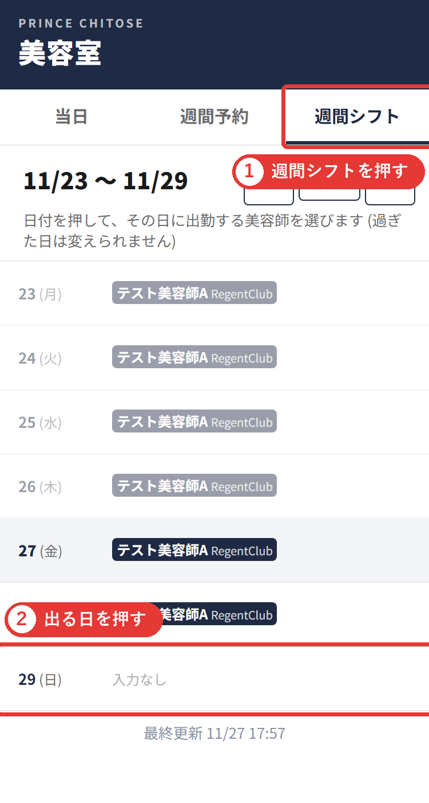
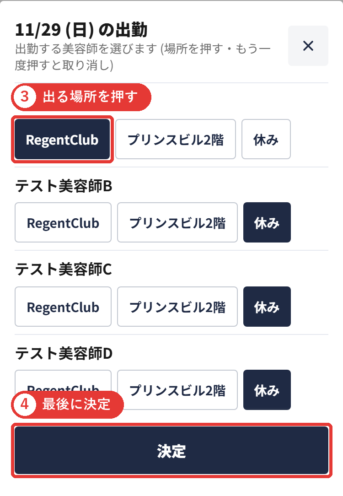
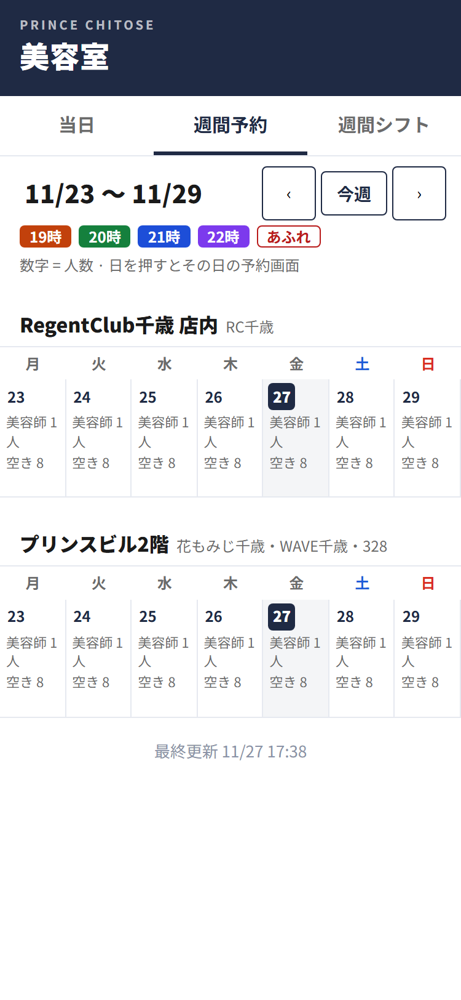
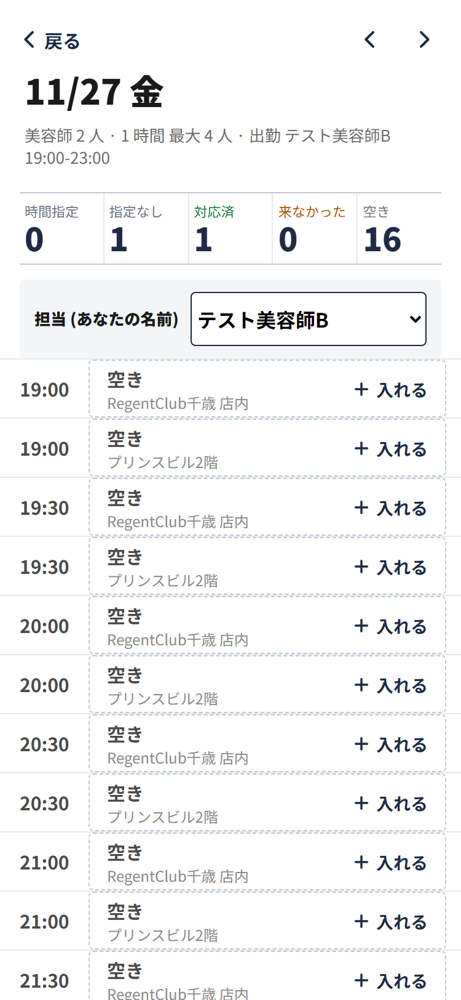
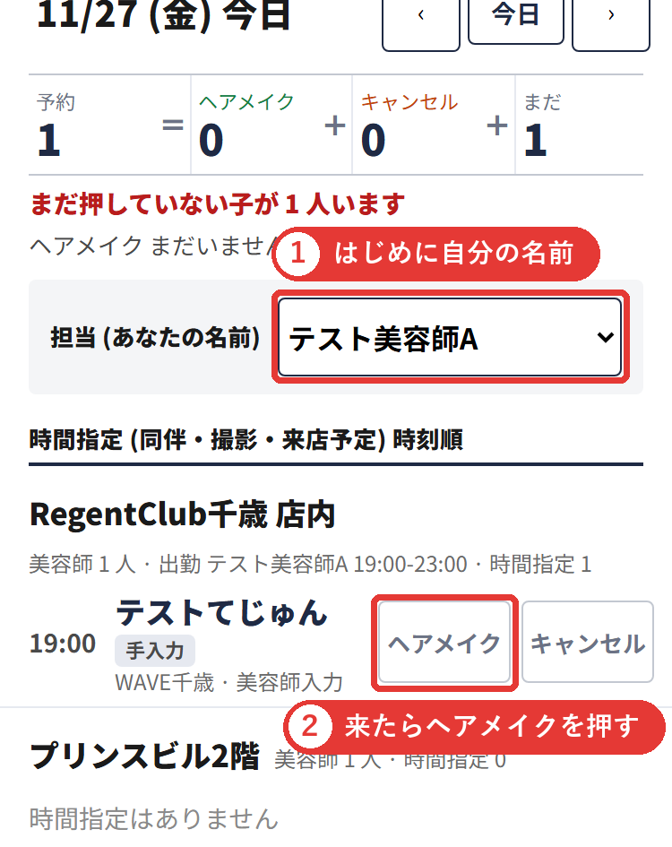
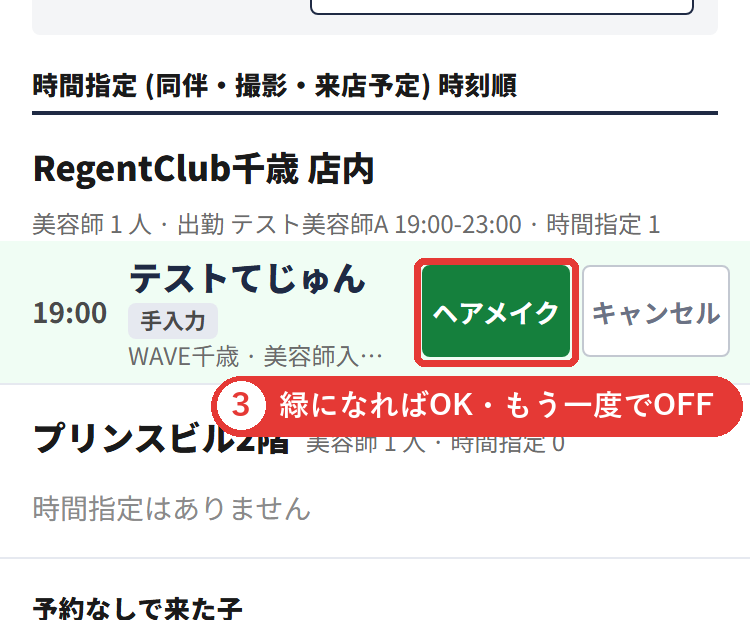
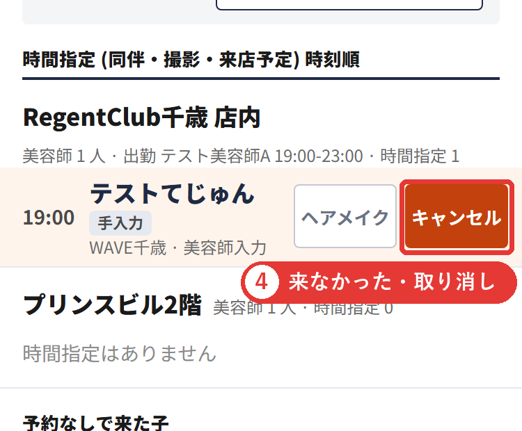
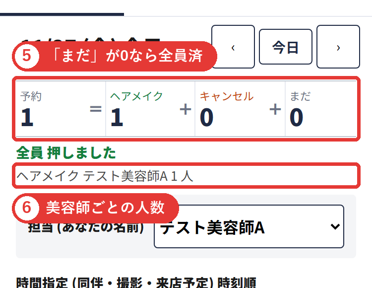
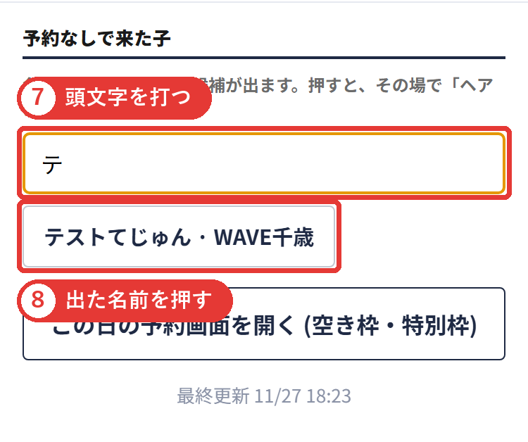

1 シフトを 入れる出る日と 場所を えらんで、「決定」を 押します
お店から
届いた リンクを
指で 押します
届いた リンクを
指で 押します
イメージ図 (LINE などで届きます)
シフトを 入れるページです
https://apply.prince-sapporo.jp/salon/
https://apply.prince-sapporo.jp/salon/
青い文字を 1 回 押すと ページが 開きます。
お店から届いた リンクで 開いてください。
鍵(合言葉)は いりません。
「週間シフト」の
タブを 押します
タブを 押します

①
「週間シフト」の タブを 押すページの 上に 並んだ タブの ひとつです。
②
出る日の 行を 押す出たい日の 日付の 行を 押すと、次の 画面が ひらきます。
過ぎた日は 変えられません。
名前の 行で
出る場所を 押します
出る場所を 押します

③
自分の 名前の 行で、出る場所を 押すRegentClub か プリンスビル2階。出ない日は「休み」の ままで 大丈夫。押した場所を もう一度 押すと 取り消せます。
④
いちばん下の「決定」を 押す押さないと お店に 届きません。
「決定」を 押さないと、お店に 届きません。
過ぎた日は 変えられません。
過ぎた日は 変えられません。
あとで
直したい時は？
直したい時は？
・日を直す … 直したい日を押す → 名前の行の 場所を 押しなおす → 下の「決定」を押す。(押した場所を もう一度押すと「取り消し」になります)
・先の週 … 週の 左右の「‹」「›」を押す。「今週」で もどります。
・過ぎた日は、直せません。
2 予約の カレンダーを 見るお店から届いた「美容室」のリンクで 開きます
1 週間の 予約が
店ごとに 見えます
店ごとに 見えます

数字は 人数です。入れる人数を こえると、「あふれ」の 赤い 札が 出ます。
その日の 予約と
空きが 時間順に 並びます
空きが 時間順に 並びます

3 来たら 記録する札の「ヘアメイク」「キャンセル」を 押すだけ
女の子ごとに ボタンが
2 つ あります
2 つ あります
ルールは 1 つだけ。
ボタンを 1 回 押すと ON (色が つく)、もう 1 回 押すと OFF (白に もどる)。
緑 = ヘアメイク した オレンジ = キャンセル
ボタンを 1 回 押すと ON (色が つく)、もう 1 回 押すと OFF (白に もどる)。
緑 = ヘアメイク した オレンジ = キャンセル
ヘアメイク したら

①
「担当」で 自分の 名前を 選ぶはじめの 1 回だけ。鍵は いりません。
②
ヘアメイク した子の「ヘアメイク」を 押す

③
緑に なれば 記録 おわりもう一度 押すと OFF に もどります。
押してから 色が 変わるまで 10〜20 秒 かかります。その間に もう一度 押さない で ください。
押し間違えたら、同じ ボタンを もう一度 押すと 消えます (OFF)。
押し間違えたら、同じ ボタンを もう一度 押すと 消えます (OFF)。
来なかった・取り消しの とき

④
「キャンセル」を 押すオレンジに なります。もう一度 押すと OFF。
数が 合っているか
見て ください
見て ください

⑤
「まだ」が 0 なら 全員 記録 済み予約 ＝ ヘアメイク ＋ キャンセル ＋ まだ。「まだ」が 残って いたら、その子の ボタンを 押して ください。
⑥
美容師ごとの 人数自分が ヘアメイク した 人数です。美容室に 来て ヘアメイク した 人数と、この 合計が 同じに なります。
予約に 無い子が
来たとき
来たとき

⑦
「予約なしで来た子」に 頭文字を 打つ
⑧
出た 名前を 押すその子の 札が 増えて、「ヘアメイク」が ON に なります。
4 明細(めいさい)の ことアプリに 入れるだけで おわり
紙の 予約票は
もう いりません
もう いりません
手書きは しなくて いい
これまで 紙に 書いていた ことは、アプリで「ヘアメイク」を 押すだけ で おわりです。
押した 人数は、美容師さんごとに 自動で 数えられて 明細に なります。
美容師さんが 計算したり、書き写したり する ことは ありません。
5 こまった ときひとりで なやまず、すぐ 聞いてください
わからない時は
聞いてくださいね
聞いてくださいね
・ページが 開かない / 「読み込めませんでした」と 出る → もう一度 ページを 開きなおす。それでも だめなら 連絡。
・「決定」を 押したか 自信がない → もう一度 ページを 開いて、出る日に 黒い札が あるか 見る。
連絡先 (お店の 担当の人が 書きます)
お名前
電話
LINE